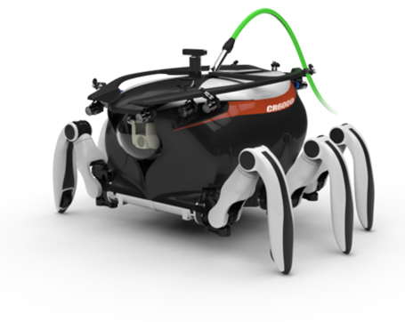
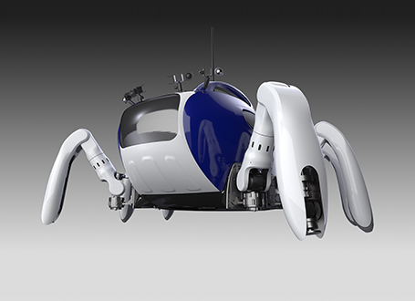
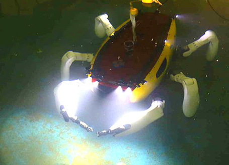

-

CR6000 is designed for 600 bar underwater depth operating.
Open frame design and deep sea swimming technologies are adopted. -

KCR300 is designed for 30 bar underwater depth operating.
Front 2 robot hands are designed for Rescue and Mine sweeping missions -

CR200 is designed for 20 bar underwater depth operating.
Front 2 robot legs can be used as a manipulating Robot hands